k-Day 112｜自我消滅
起床後看了手錶數據，昨天竟然爬升了950公尺。眼睛看著是下坡的路，竟然就爬到兩千多公尺了。
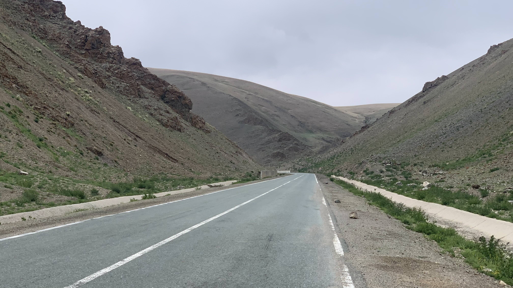
距離最近的餐廳還有80公里。延續昨天的爬坡，今日會先爬升至2400公尺，下滑倒2000公尺左右。明日順利的話再往上攀升至2874公尺。
吃完早餐後飲水剩下3公升，和一瓶一公升蜂蜜蘋果茶、1.2公升蘿蔔汁、6包咖啡包，罐裝咖啡和草味汽水是今天和明天的下午茶。
食物還有兩包泡麵、一包綜合堅果、3/4片巧克力、2/3塊酸羊奶塊、3包蛋白粉、能量膠。
爬過這片山谷就是往口岸的道路。
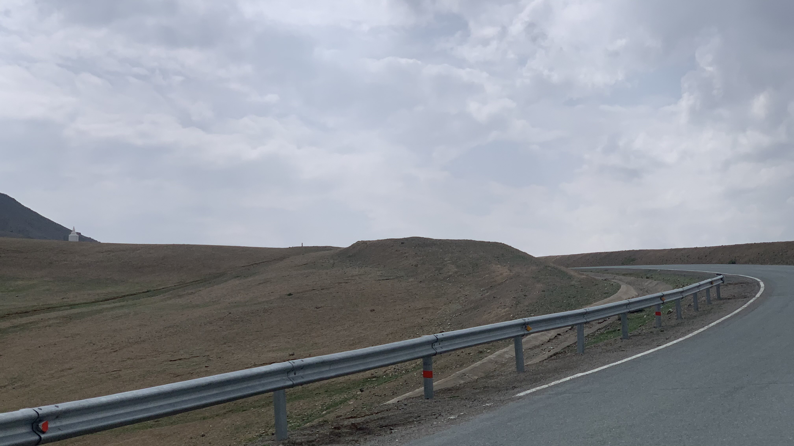
離開狹窄的山谷，景色又開闊了。
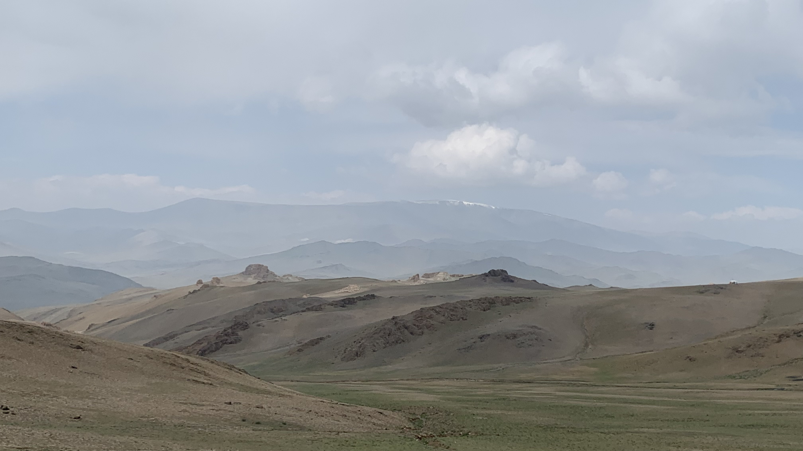
山頂的積雪還沒有融化。
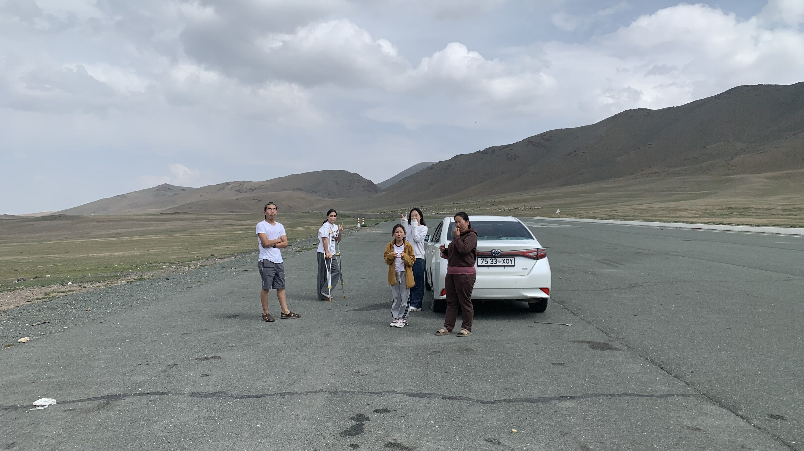
在路肩的休息區停下來，垃圾桶旁整片碎玻璃，將二十三號放倒在地上，丟完垃圾就坐在車旁休息。下車上廁所的一家人從後車廂拿出竹編麵包籃吃著像麵包一樣的炸麵糰。遠遠地看著他們，只覺得肚子好餓。
車上的小朋友捧著籃子走到我面前，示意讓我拿炸麵糰。很想多拿幾個，又有點不好意思，拿了一顆麵團塞進嘴裡。麵團的香氣和甜味撫平了逆風爬坡帶來的靈魂創傷。
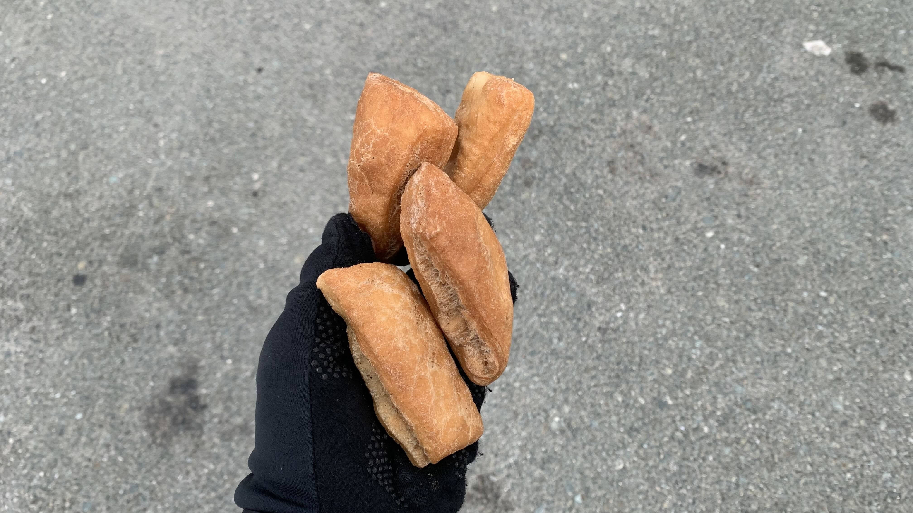
大概是看我一口吃完麵糰，小朋友又捧著籃子走過來，示意要我多拿幾個。再拿了一塊塞進嘴裡，另外抓了四塊裝進糧食袋。
咀嚼著口中的麵團，休息區又來了兩輛轎車，全都是同一家人，從阿爾泰蘇木來的。開車只要一、兩個小時就到的，騎車不知道還得多久。大家圍著躺在地上的二十三號聊了一陣天，祝福彼此後往相反的方向出發。
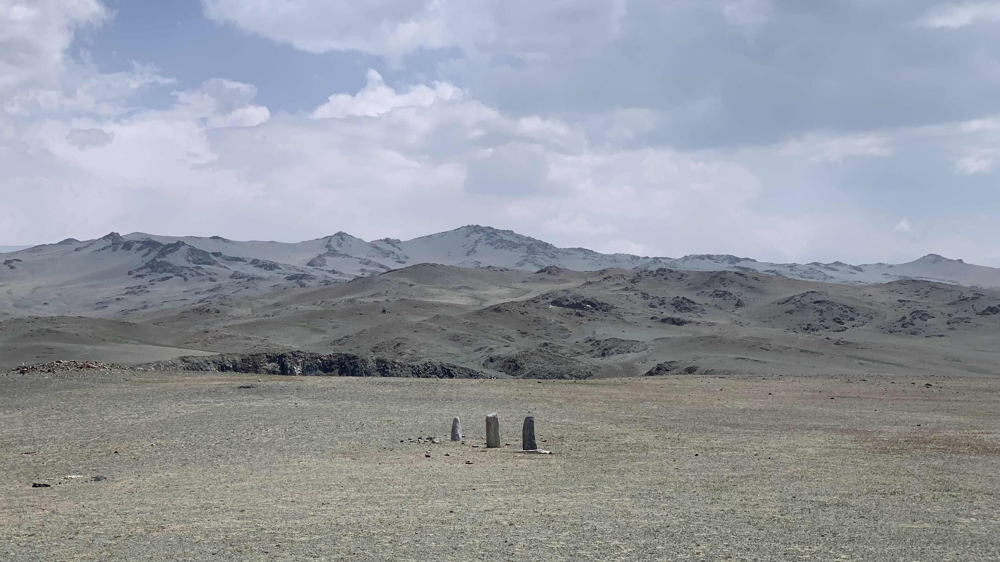
毫無防備，左邊草地上出現三顆鹿石。
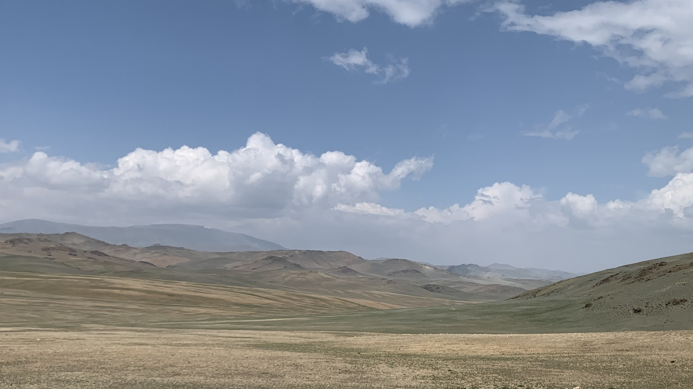
周遭是一整片山谷，沒有動物，也沒有人。
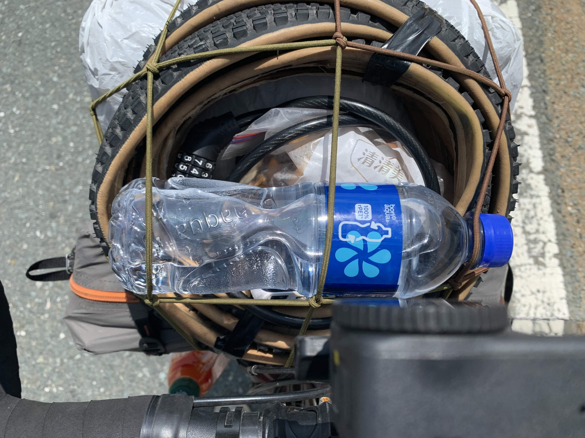
爬坡時獲得一瓶礦泉水，在這種四下無人的地方，今天相當幸運。
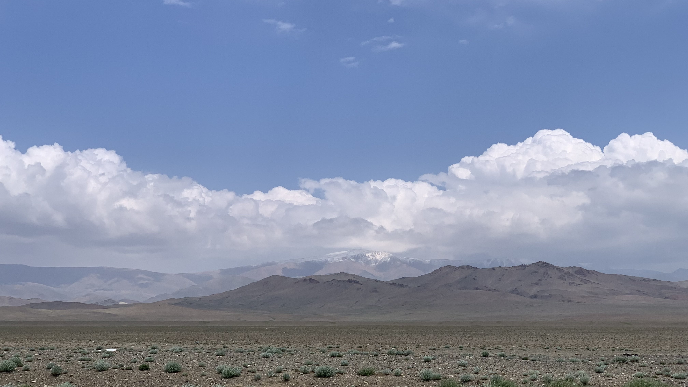
地形開闊後，逆風也跟著增強。坐在路邊看雪山發呆，又吃了一塊炸麵團。
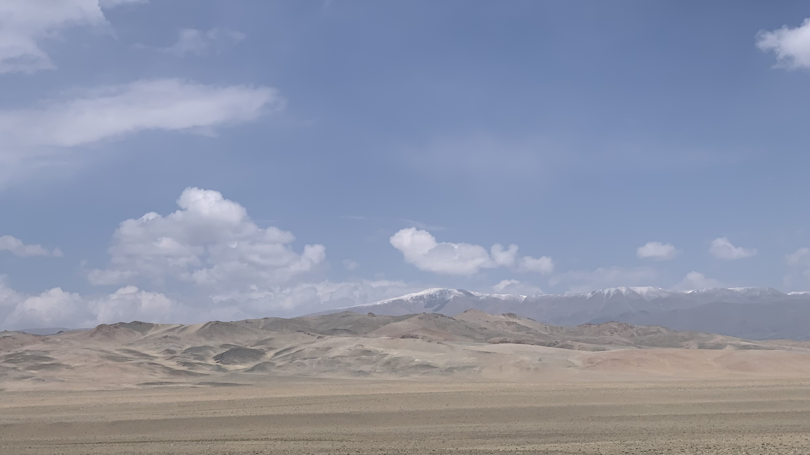
雪山越來越近，暗自祈禱南下路線不要經過這座山。
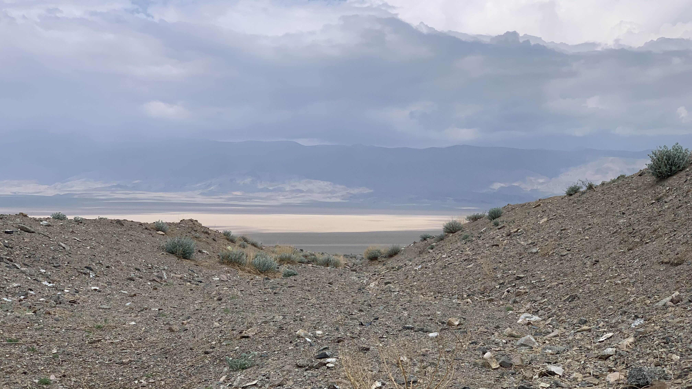
下午三點被風吹得東倒西歪，嘗試推車前進，仍然搖搖晃晃。見到路邊出現涵洞，沒有猶豫就躲進去。
地上的礫石太鬆散，營釘完全無法固定，搬了好多顆大石頭壓著還是不斷被吹飛。花了將近一小時終於拉好內外帳，過程中將畢生學過的髒話以各種排列組合都吼過一次。耳膜異常疼痛，手腳都吹到發麻。
躲進帳篷仍然感到不安，涵洞只能稍微擋著西風的腳，上方和北面刮來的風使帳篷發出巨大聲響，晃動程度即便營柱立刻折斷也不意外。戴上耳塞，用手遮住耳朵也沒用。能不能讓我暫時消失在地球上，什麼辦法都可以，把身在此處的我消滅吧。
今日花費： 0元